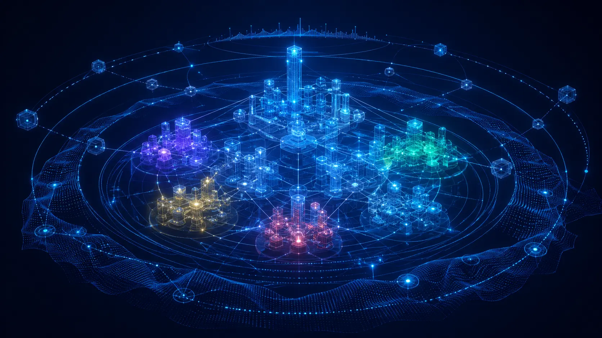

Графовое моделирование
Команда, управление, рынок, мотивация и внешние изменения анализируются как единая динамическая структура, моделируя сценарии развития.
Большинство аналитических систем показывают цифры прошлого. Меторика моделирует компанию как живую среду — подсвечивая скрытые перегрузки, конфликты, потери устойчивости и точки роста до принятия решений.

Уникальная математическая модель, в которой организация описывается через сквозное взаимодействие внутренней системы и сложной внешней среды.
Команда, управление, рынок, мотивация и внешние изменения анализируются как единая динамическая структура, моделируя сценарии развития.
Автоматически собирают и структурируют данные, выявляя слабые сигналы, внутренние дисбалансы компании и скрытые системные риски.
Система переводит одну управленческую ситуацию на понятный язык собственника, CFO, HR, COO или инвестора — каждому свой срез реальности.
От первичных данных — к управленческому решению. Четыре шага системной работы с реальностью компании.
ИИ-агенты собирают данные из внутренних источников: HR-система, финансы, CRM, переписки, операционные метрики. Шум фильтруется, сигналы усиливаются.
Компания описывается как граф взаимодействий: роли, потоки, зависимости, точки перегрузки. Математический «двойник» организации.
Прогоняются штатный режим, шоковые сценарии и стратегические развилки. Система показывает каскадные последствия до их наступления.
Каждый стейкхолдер получает выводы на своём языке: собственник видит устойчивость, CFO — кассовые риски, HR — выгорание и зависимости.
Готовые пресеты динамических моделей, настроенные под специфические вызовы различных отраслей.

Меторика прогоняет экстремальные сценарии до их фактического наступления — показывая не просто точку удара, а развёртывание каскадной цепной реакции по всей структуре.
Состояние бизнеса в виде интерактивной трёхмерной лепестковой диаграммы — для мгновенного считывания системных перекосов.

Ответы на ключевые вопросы о платформе, интеграции и практическом применении.
Запросите демо-доступ — и получите первый аналитический срез в течение 48 часов.